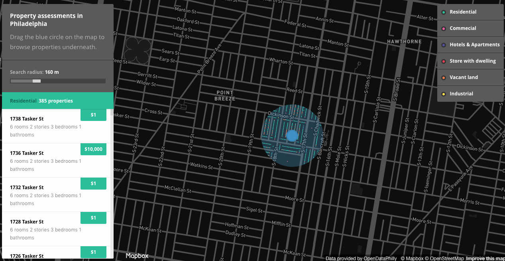

Mapbox Workshop
Geospatial Innovation Facility
Hi, we're
Colleen and Mal.
from
Mapbox
t
Follow along
http://bit.ly/2eKiF0x
This workshop will cover:
What's possible with Mapbox
How to upload and style data in Mapbox Studio
Adding interactivity to your map using our Mapbox GL JS library
Geospatial analysis using Mapbox+Turf.js
Mapbox wants to change the way people
navigate cities
and
understand
our planet.
We do this by providing
building blocks
for integrating brand and location into any
mobile
or
online
app.
Geocoding API:
transforms customer requested delivery addresses into a latitude, longitude point.

Turf.js:
pairs request with an available courier and sends an instant notification.
Directions API:
generates a route for courier's accepted delivery request.
Beautiful vector maps:
mix of performance, science, and design that
renders data
in real-time.
Mapbox makes APIs that specify how
geospatial and navigational
app components interact with each other.
Store and maintain geographic datasets
(Dataset Editor)
Design custom GL map styles
(Style Editor)
Mapbox Studio leverages:
Styles API
- read and write map styles, fonts, and icons
Uploads API
- transforms geo data sources and files into performant production-ready tilesets
Datasets API
- offers persistent storage for custom geo data and allows add and edit features
Maps API
- serves our raster and vector tiles (aka final maps you see)
Static API
- returns static maps and raster tiles from styles
Tileset API
- stores metadata for raster and vector tilesets
Workshop!
Here's what you'll be making today.
Here's what you'll need to get started:
Sign up for a
Mapbox Studio account
Download
GeoJSON data
thank you.
happy mapping!
Colleen and Mal
from
Mapbox